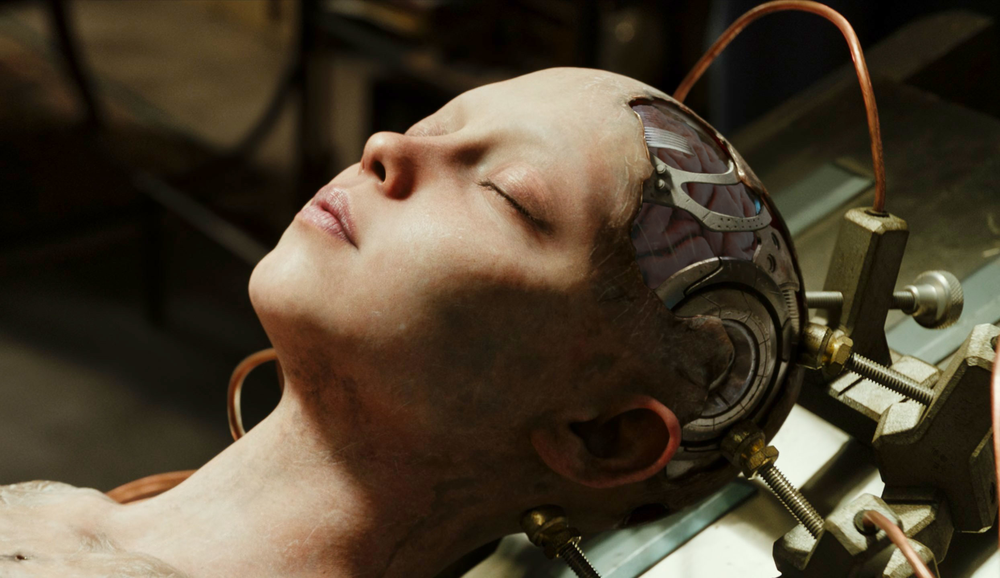

About Alita
Alita was the cyborg found on srapyard of iron city by Dr Dyson from their he name her Alita, the name of his daughter and he give her body Alita wakes with no memory of her past and quickly befriends Hugo, a young man who dreams of moving to the wealthy sky city of Zalem. She also meets Dr. Chiren, Ido's estranged ex-wife. Hugo later introduces Alita to Motorball, a Rollerball-like racing sport played by cyborg gladiators. Secretly, Hugo robs cyborgs of their parts for Vector, owner of the Motorball tournament and the 'de facto' ruler of the Factory, Iron City's governing authority. One night, Alita follows Ido; they are ambushed by a gang of cyborg serial killers led by Grewishka. Ido is injured, and Alita instinctively fights using "Panzer-Kunst", a lost combat art for machine bodies. She kills two of the cyborgs and damages Grewishka, who retreats. Ido reveals that he is a Hunter-Warrior, a bounty hunter hired by the Factory. Grewishka goes to Dr. Chiren, who is working for Vector, for help. Despite Alita believing that fighting will help her rediscover her past, Ido discourages her from becoming a Hunter-Warrior. Alita finds a highly advanced cyborg body in a crashed spaceship outside the city. Recognizing that the body belonged to a Berserker—deadly shock troops of the enemy nation United Republics of Mars (URM) from the Fall, of which Alita was a member—Ido refuses to install Alita in it.
Characteristics of Alita

- She is so kind on her heat
- She willing to sacrifice his life for others
- She never tolerate evals on her presence
- she his so strong
Alita possess the following characteristics as the main character of the movie;
Mission
- Nova
- Vector
- Grewishka
- etc
Her mission was to elliminate the source of eval,
her enemies was all of
people who tend to facilitate and enourage evals,
some of the enemies are as follows;